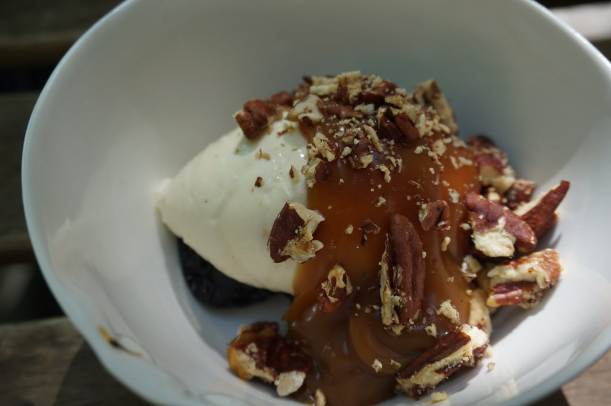

приготовление:
-
Взять по 5–8 шт. чернослива на порцию. Замочить в горячей воде на 10–15 минут. По желанию взять для замачивания ром, коньяк или ликёр вместо воды. Слить жидкость и обсушить чернослив.
-
Для мусса взбить 70 мл сливок 33–35% до мягких пиков. В отдельной миске смешать 100 г маскарпоне, 50 г греческого йогурта, 1 ст. л. сахарной пудры и 1 ч. л. ванильного экстракта венчиком или миксером на низкой скорости до однородности. Аккуратно вмешать взбитые сливки лопаткой движениями снизу вверх.
-
Оставить горсть орехов пекан как есть или обжарить на сухой сковороде 5 минут, постоянно помешивая. По желанию при обжаривании добавить немного кокосового масла и 1 ч. л. кленового сиропа. Крупно порубить орехи.
-
Разложить чернослив по двум креманкам или тарелкам, предварительно нарезав его или оставив целым. Сверху выложить мусс из маскарпоне, добавить солёную карамель по вкусу и посыпать рублеными орехами пекан.